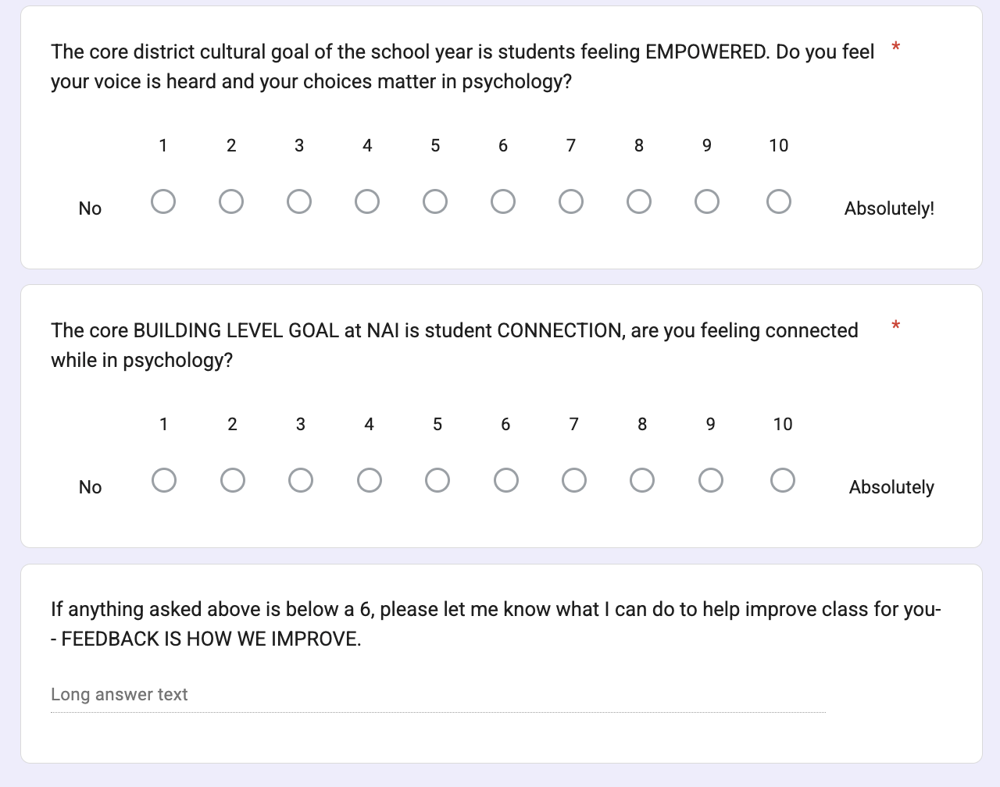
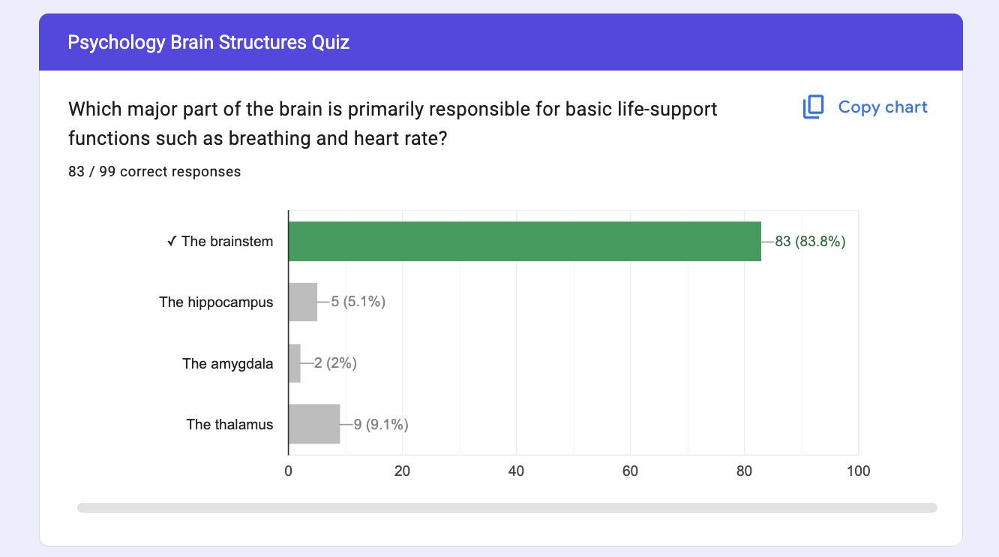
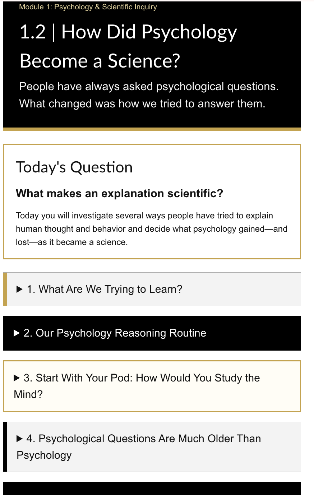
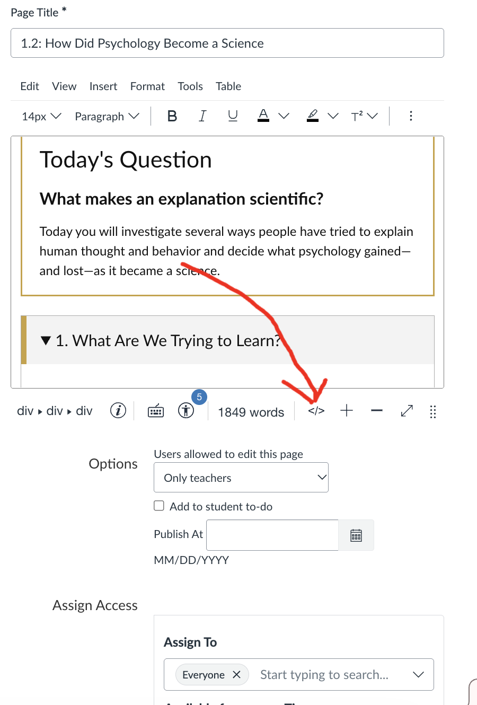
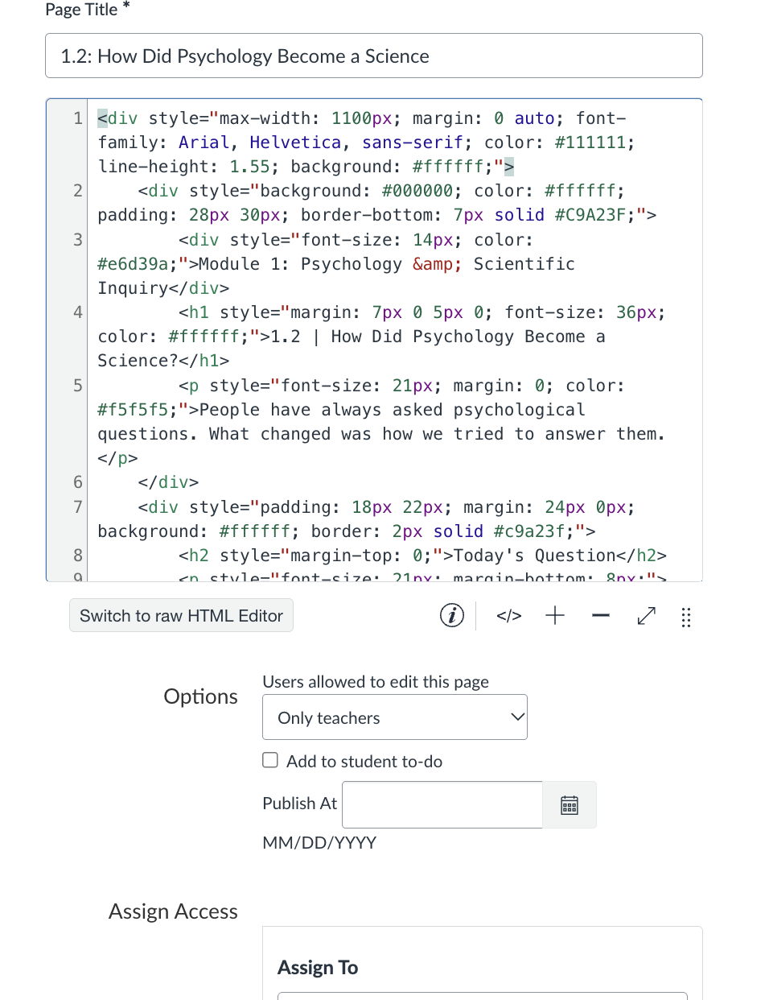
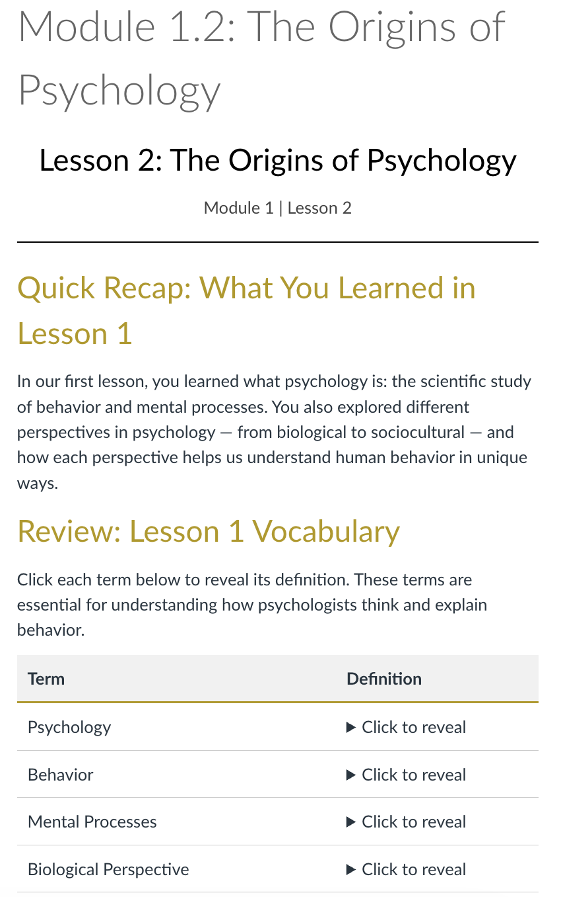

Build a Feedback + Formative Check
Create one short check that gives you evidence about both student learning and the student experience.
Leave withA ready-to-use question set or form for a real class.
This is never technology for technology’s sake. It is about using the tools already available to strengthen the fundamentals: clear goals, strong instruction, formative assessment, student feedback, responsive teaching, and opportunities to improve.
Before we name a framework, here is the classroom workflow this workshop is built around. You do not have to use every tool or complete every step every time. The goal is to shorten the distance between what students show us and what we can put in front of them next.
Build the lesson, activity, assessment, Canvas page, paper resource, or other material students need.
Organize Pages, Modules, resources, directions, and quizzes so students can find and use what they need.
Use ungraded formative questions, student work, quizzes, observation, or other checks to see what students are carrying forward.
Keep what is working. Re-teach, re-embed, change an example, revise a page, or create another mastery opportunity when the evidence points there.
Check clarity, challenge, support, engagement, connection, independence, collaboration, or other parts of the student experience you care about.
Use performance + experience together to decide what students should encounter next.
If your course is already built in Canvas, export the full course and upload it to Chat. Now your AI partner can work from your actual sequence, terminology, pages, readings, packets, assessments, quiz questions, and examples.
Use that course context to revise or create the next page, paper guide, quiz, case, review, scaffold, or mastery attempt while staying grounded in what students have already encountered.
Collect new evidence and repeat.
Good teaching still depends on knowing what we want students to learn, creating strong learning experiences, checking what students are actually learning and experiencing, and responding to the evidence.
The workflow above is not a new teaching initiative. It is a more visible, more actionable version of a familiar habit: build, check, respond, and try the next version.
Canvas, AI, Apple tools, Newline boards, and New Quizzes can reduce the time between noticing a need and putting the next useful version in front of students.
The tools support the cycle. They do not replace it.
The workflow you just saw maps cleanly onto Deming’s continuous-improvement cycle. We will use the cycle as a shared mental model, not as another initiative or a required sequence of activities. Planning is built into the work itself.
What do we want students to learn and experience?
Clarify learning, culture, capacity, independence, support, engagement, and the evidence that would help us know how things are going.
Build it and put it in front of students.
Canvas, paper, AI-assisted production, QTI 2.1, alternate quiz versions, classroom technology, and the actual teaching experience.
What are students telling and showing us?
Friday Forms, ungraded formative evidence, student work, quiz results, comments, observation, and cultural feedback.
What do we carry into the next version?
Keep what is working, re-embed what needs another pass, change a delivery decision, revise a page or packet, create another mastery opportunity, close the loop with students, and begin the next cycle.
PLAN is built into every pathway: what are you trying to accomplish, what are you starting with, and what evidence would matter? From there, choose a place to build, study evidence, or respond.
Clarify what you want students to learn or experience and what would help you know how it is going.
Create or organize the material students will actually use.
Collect learning evidence and student experience feedback.
Keep, tailor, re-embed, revise, reassess, or ask another question.
Friday Forms and other checks can combine student experience evidence with ungraded formative learning evidence. Both help us stay accountable to the classroom culture and learning standards we intended.
Canvas, AI, classroom tools, and New Quizzes can make it faster to build, respond, and put the next useful version in front of students. The tools do not replace the cycle.
Create one short check that gives you evidence about both student learning and the student experience.
Put learning evidence and student experience evidence next to each other and decide what the evidence actually supports.
Take materials you already have and get them into a usable Canvas Page / Module without turning the task into a redesign project.
Create student-facing HTML from your content, or change an existing page so it better fits how you teach now and the technology you use.
Start with the Canvas lesson or paper resource you already have and create the missing companion so each medium has a clear job.
Create a formative check, move an existing quiz into New Quizzes, or make another aligned mastery opportunity using QTI 2.1.
Export the full Canvas course, upload it to Chat, and use the actual course as context for planning, revision, alignment, and new materials.
Take what students showed or told you and use it to change the actual page, paper resource, assessment, example, sequence, or classroom move they will encounter next.
These examples are here to make the process visible. They are not a template teachers are expected to copy.





Bring your own content. Ask Chat to format the backside HTML. Switch Canvas into HTML mode, paste, save, review, and revise.
The Psychology inquiry guide is one example of dividing the work across two surfaces. Canvas carries sequence and resources. The paper guide carries stops, notes, evidence, and reasoning.
Open the packet
Getting material into Canvas can be useful on its own. Later versions may change as the course, materials, and classroom use change.